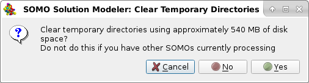

|
In this module you can control several advanced configuration options.
-
Automatically view PDB structure upon loading. De-selecting this checkbox will
turn off the automatic PDB structure visualization through RasMol.
-
Side scroll text window. Checking this box will change the visualization mode
in the right-side progress window.
-
Automatically build somo bead model upon loading pdb. Selecting this checkbox
will launch the SoMo bead model building method immediately after loading a PDB file.
-
Automatically show hydrodynamic calculations. The pop-up window with the results
of the hydrodynamic calculation will be automatically shown after the computations are completed
if this checkbox is selected.
-
Temporary directory clear size threshold [MB]. In both the ".../ultrascan/somo" and ".../ultrascan/somo/saxs" directories (check full path under different operating systems) "/tmp" directories are present, where temporary files and sub-directories are created during US-SOMO various operations. While some recent improvements as in the NMR-style file processing in the Batch Mode Operations module will automatically clear temporary directories upon completion or operation halting, other modules will not perform post-processing clearing operations. This new feature, installed in January 2023, will check the size of the ".../ultrascan/somo/tmp" and ".../ultrascan/somo/saxs/tmp" directories upon either launching or exiting US-SOMO. If their total size is above the value listed in this field (default: 50 MB), a pop-up message will appear:

Reporting the global size (such as the "540 MB" shown in the image above) of the ".../ultrascan/somo/tmp" and/or the ".../ultrascan/somo/saxs/tmp" directories. Clicking on "Yes" will instruct the program to clear the ".../tmp" directories, clicking on "No" will leave the content of the ".../tmp" directories untouched, clicking on "Cancel" will halt the current operation. Important: as reported in the pop-up panel, you should not clear the content of the ".../ultrascan/somo/tmp" and ".../ultrascan/somo/saxs/tmp" directories IF you have other US-SOMO independent instances running, as they might be using the content of temporary directories!!!
-
Activate sound notifications. A sound file, named
somo_done.wav, present in the sounds subdirectory of UltraScan, will
be played after completion of computation of the Build SoMo Bead
Model, Build AtoB (Grid) Bead Model, Build Grid Bead Model and
Calculate Hydrodynamics. Note: if Automatically Calculate Hydrodynamics
is selected, the sound will not play until Calculate Hydrodynamics is completed.
Sound under Linux only works if the NAS (Network Audio System) is available.
-
Expert mode (skip some warning messages)
Selecting this options automatically unsets 'Automatically view PDB structure upon loading'
and sets 'Side scroll text window', 'Automatically build somo bead model upon loading pdb', and
'Automatically show hydrodynamic calculations'. Also, warning message boxes associated with the automatic bead builder
and approximate method are not displayed.
|